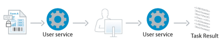

|

Processes that involve users typically require the users
to review information or provide information, or both:
-
The User service creates tasks that appear in users’
To Do lists in Workspace. Users can review information that is presented
in a form, Guide, or document, enter new information, attach files,
add notes, and submit the task.
-
Workspace endpoints enable users to open tasks from the Start Process
page of Workspace and submit them to invoke a process.
If PDF forms are used, task forms can also be sent to users in
email. Users can open and complete the form by using Acrobat Professional
and Acrobat Standard or Adobe Reader.
When a user completes a task, all the information about the task
is submitted to the LiveCycle server:
-
Information that was entered in the form or Guide
-
Attachments and notes
-
Task metadata, such as the task ID, when the task was assigned
and completed, and who completed the task
When the information is saved in process variables, you can use
it later in the process. For example, you can use submitted form
data in another task so that a different user can act on it. Typically,
information is also used to make routing decisions. You can use
XPath expressions to retrieve an item of form data for use in a
route condition. For example, in a purchase order example, the cost
of the purchase is used to make routing decisions. Low-cost purchases
are made automatically, and high-cost purchases require approval.
Note:
The User service can be used only with Workspace
and email. To use a different application for enabling users to
receive, open, and submit forms, create a custom service for assigning
tasks to users. (See
LiveCycle ES2.5 SDK Help
.)
Enable users to start processes
Workspace start points enable users to start processes
from Workspace. When you add a Workspace start point to the process
diagram, a process card appears on the Start Process page of Workspace.
When users click the card, a form or Guide opens. When they submit
the form or Guide, the process is started.
The properties of the start point determine the form or Guide
that appears in Workspace. Also, you specify rendering properties,
as well as which Workspace features can be used.
Workspace start points cause the creation of a corresponding
TaskManager endpoint on the LiveCycle server. When you save a process
that includes a Workspace start point, endpoint properties that
were modified using LiveCycle Administration Console are overwritten.
For information about how to add and configure Workspace start
points, see
Starting processes using start points
.
Send a task to one user
The Assign Task operation of the User service creates one
task that is assigned to one user or group.

The Assign Task operation is useful when a succession of people
capture or consume information. For example, an employee submits
a purchase order request. The request is then routed to a person
in the procurement department for review. For more information see
Assign Task operation
.
Send tasks to multiple users simultaneously
The Assign Multiple Tasks operation of the User service
creates several tasks that are assigned to multiple users or groups
(or both) at the same time. The tasks are identical in that they
all present the same information. You can create lists of users
and use the lists to assign multiple tasks. User lists are useful when
a specific group of people are involved in review activities across
several processes.
Information that is submitted with each task is stored in a collection.
You can use XPath expressions to retrieve and process information
from individual tasks.
The Assign Multiple Tasks operation is useful when a process
requires that several people provide similar information. For example,
at the end of each fiscal quarter, a process assigns a task to the
vice president of each geographical sales group of your organization.
To complete their tasks, each vice president attaches their quarterly
sales report and then submits the task. The process retrieves each attachment
from the collection of task results and sends them to the senior
vice president of sales.
Similarly, the Assign Multiple Tasks operation is useful when
the process requires that several people review the same information,
such as in document review and approval processes. For more information,
see
Assign Multiple Tasks operation
.
Document review and approval processes
A common business process requirement is that several users review
information and provide feedback on it. The User service supports
the review of information by multiple people in parallel or in series:
-
Parallel:
-
The Assign Multiple Tasks operation assigns tasks to several
people simultaneously. The tasks require each user to review the
same information.
For example, a change-management committee
of a manufacturing company reviews proposals for improving existing
products. The members of the committee vote to decide whether to
approve or deny proposals. The Assign Multiple Tasks operation creates
tasks that display the change proposal. Each committee member receives
a task in their To Do list in Workspace, and either approves or
denies the proposal.
-
Series:
-
Several Assign Task operations execute in series, and each
operation assigns a task to a user. For each task, the results are used
as input for the next Assign Task operation.
For example,
in a purchase order process, large purchases are ultimately approved
by executive-level managers. Before the executive reviews the request, it
is first reviewed by one or more lower-level managers according
to the organizational hierarchy. An Assign Task operation is added
to the process diagram for each level of management that performs
a review.
Process Management provides the following features
that are useful for review and approval processes. Some features
are not available for both Assign Task and Assign Multiple Task
operations.
Workspace approval tools
When users open their task, they can add
comments to it and see the comments that other reviewers added.
Users can also see what action other users selected when they submitted
their task.
Collection data and XPath functions
The information that is submitted
for each task of an Assign Multiple Tasks operation is saved in
a collection variable called
Task Result Collection
. XPath
functions can be used to evaluate the results. For example, you
can determine how many people selected a specific action or what
percentage of people submitted the action. These functions are useful
when assessing results of document reviews that occur in series.
For more information see
Assessing review and approval results
.
Completion policies
You can complete an Assign Multiple Tasks operation
before all of the generated tasks are completed. This feature is
useful when a decision can be made about a review without a response
from every reviewer. For example, the acceptance of a proposal requires
a majority of approvals from committee members. You can complete
the Assign Multiple Tasks operation immediately after more than
50% of the tasks are completed when the Approve action is selected.
See
Adding completion policies to Assign Multiple Tasks operations
.
Electronic signature processes
Electronic signatures are useful for validating that a
specific person has read a particular piece of information. Processes
can incorporate electronic signatures that can be used with tasks.
(See
Signature
.)
Digital signatures
Digital signatures on PDF documents can be
used to verify that a person has read a specific document:
-
Users can be sent a PDF in a task that they sign with their
own credential. When submitting the task, the document is submitted
and remains unchanged to preserve the signature.
-
The LiveCycle server can sign a PDF document that a user
submitted.
Click-through electronic signatures
Confirmation messages can be displayed
to users in a dialog box when they submit a task. The message can
be used to establish a contractual agreement.
Alternate tools for interacting with processes
Although Workspace is the primary tool for interacting
with processes, email messages and certain mobile devices can also
be used.
Email
In
addition to receiving notification messages about new tasks and
the occurrence of deadlines and reminders, users can complete tasks
using email:
-
Reply to task assignment notifications:
-
You can include links that users can click to reply to task
notification emails. (See
Enable task completion by replying to notification email
.)
-
Submit PDF forms:
-
PDF forms for a task can be attached to task notification
email messages. Users can open the form and submit it using email.
The submit button on the form must be configured correctly. (See
Creating email templates
.)
Mobile devices
Applications can be obtained for certain mobile
devices for interacting with tasks. Users can complete tasks from
their mobile device, and, for PDF forms, open the form for viewing:
|
|
|